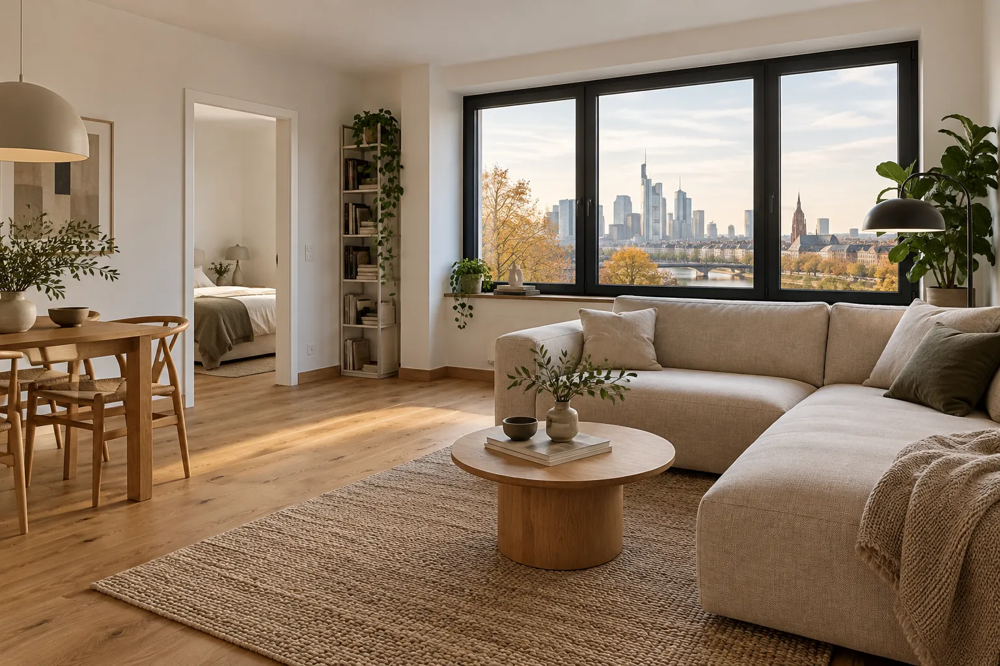

Independent tradesperson · Frankfurt am Main and surrounding areas
Renovation and
interior finishing.
From a small task to updating a room. Let’s discuss what your home needs.


01 Services
How can
I help?
Every home is different, and not every task fits a fixed list. First, I want to understand what you would like to change.
01020304
Renovation and interior work
Refresh a room or update one part of your home. We start by discussing its condition and your intended result.
Laminate and flooring
Installation of laminate and suitable floor coverings, including associated preparation and finishing work.
Assembly and dismantling
Help with assembling or removing individual items and preparing rooms for the next stage of work.
Small repairs and property care
Smaller household tasks and practical help around your home. Small jobs are welcome to discuss too.
The exact scope and whether the work can be undertaken are discussed individually.
All services02 Work
Spaces, down to the details.
Spaces, finishes and combinations of materials. Explore the details and tell me what you would like to change in your home.
03 About me
A direct
conversation.
My name is Dmytro Mykhavkiv. I provide renovation, interior finishing and assembly services in Frankfurt am Main and the surrounding areas.
More about me
04 Working together
From first contact to the work.
The details and sequence are agreed for your individual task.
- 01
Get in touch
Send a message, call me or share a few photographs.
- 02
Clarify the details
We discuss your wishes, the conditions on site and the intended result.
- 03
Agree the scope
We agree the work, materials and next steps.
- 04
Work and handover
After agreement, I carry out the work and discuss the result with you.
05 Before we talk
What helps with
the first conversation?
- 01
Photos of the space
A few recent photos of the room or area where work is needed.
- 02
A short description
What would you like to change, and what result do you have in mind?
- 03
Your preferred timing
An approximate period when you would like the work to begin.
06 Questions and answers
Common questions.
Can I start by sending photos?
Yes. A brief description and a few photos help me get an initial impression. We can clarify further details in a conversation if needed.
How do we discuss materials?
Tell me which materials you already have or what result you are looking for. Before work starts, we agree what is needed and who will supply it.
How is the scope agreed?
We first discuss your task and the conditions on site. We then clarify the specific work and the next steps.
Where do you work?
Frankfurt am Main and the surrounding areas. Please share the location of your property so we can discuss travel.
07 Contact
What would you
like to update?
A few words or photos are enough to start. I will review your enquiry and tell you openly whether I can help.